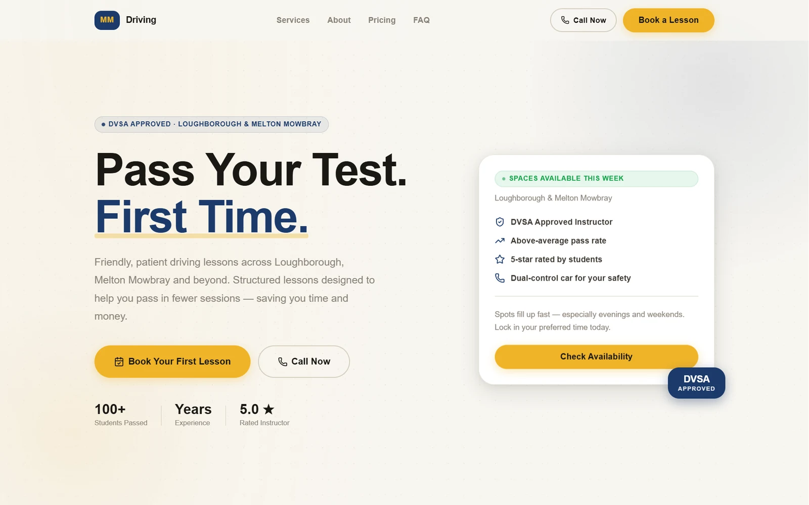
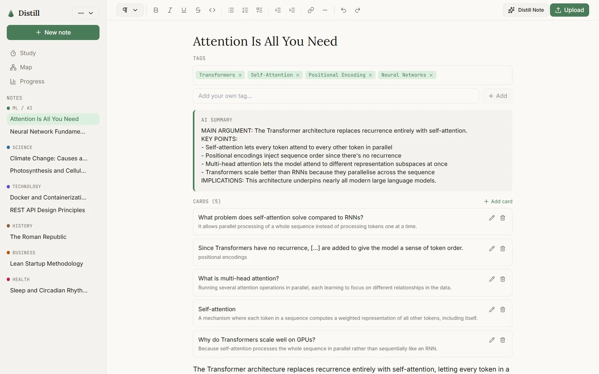
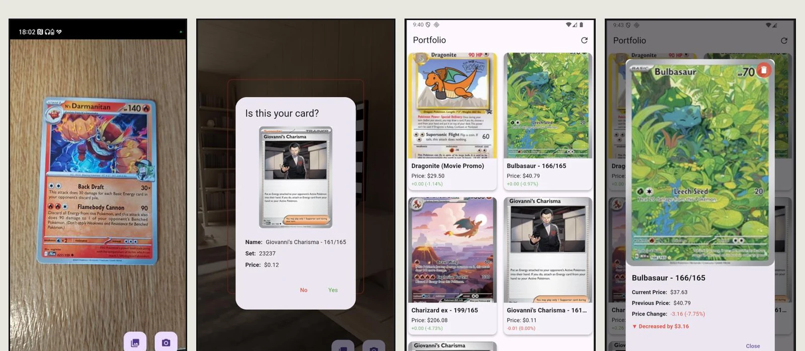
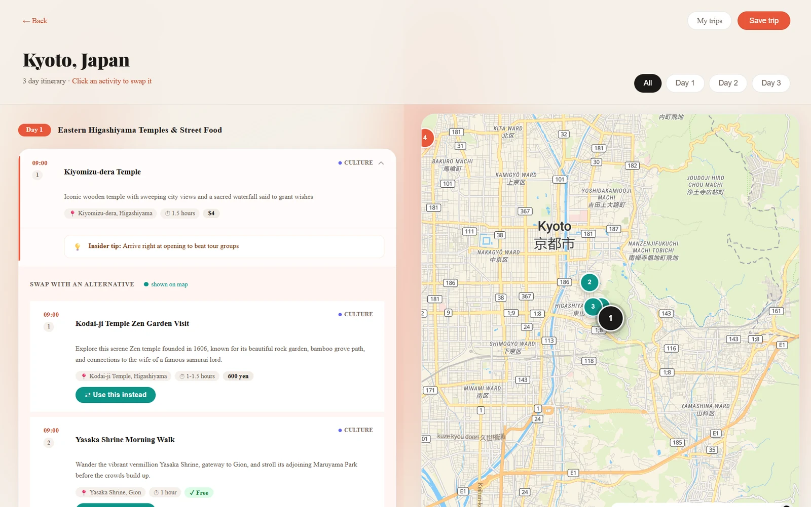
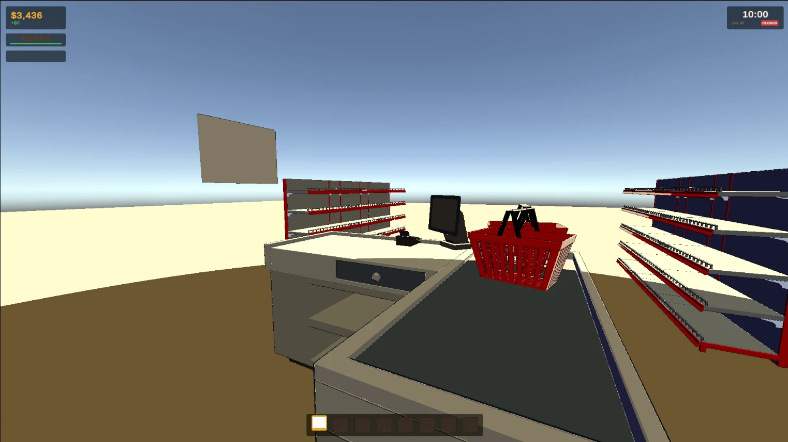

Contents 目次
Five chapters, read left to right. Each panel opens its chapter.
-

1 第1話 MMDriving A website for a driving instructor, designed and built for a real client. Still in progress. Client work -

2 第2話 Distill My MSc dissertation: a study app shaped by usability testing and a mid-build redesign. MSc dissertation -

3 第3話 Card Scanner My BSc dissertation: point a phone at a Pokémon card and it names the card and its price. BSc dissertation -

4 第4話 BaconAI An AI travel planner, reshaped over three rounds of my own design critique. Live product -
 5 第5話
CodeMarker
A code reviewer redesigned as an exam paper marked in red pen.
Self-directed
5 第5話
CodeMarker
A code reviewer redesigned as an exam paper marked in red pen.
Self-directed
